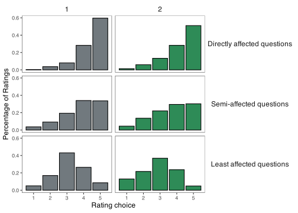
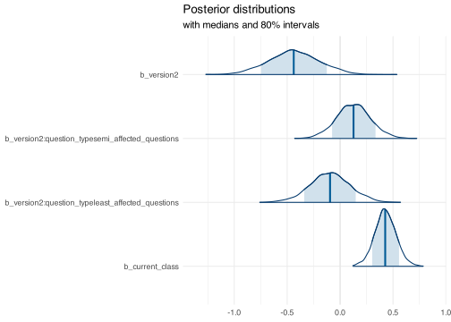
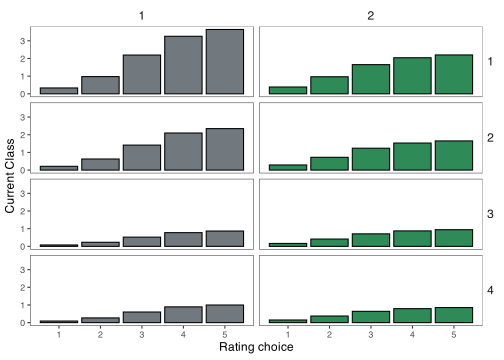
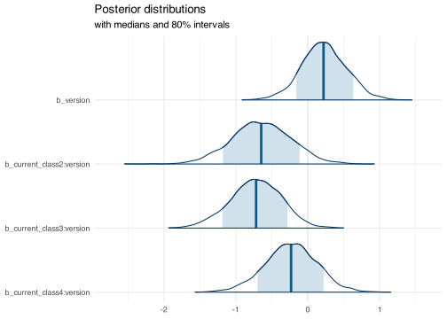

Updated Bayesian Ordinal Analysis
RQ 1: Does learning explicitly about bilingualism impact novice-intermediate L2 learners’ attitudes towards bilingualism and language learning?
This one I don’t think we can answer with the data (no pre/post design)
RQ 2: How do the attitudes towards bilingualism and language learning differ between students who have received explicit instruction about bilingualism and those who have not?
We have evidence that those with instruction answered more positively for 3 of 4 question types.
Statistical Analysis
An Bayesian Ordinal regression fit in R with brms with default priors with the cumulative family. Rating was predicted as a function of survey version (1 or 2) and question type (4 levels), with random intercepts for prompt and participant. The model was fit with 1000 warm-up and 2000 additional iterations across 4 processing cores.
Results
Figure 1 shows the distribution of ratings in each of the 4 question types in both versions 1 and 2. The bars represent the percentage of each answer choice in order to show comparable proportions rather than absolute numbers (since the group sizes were not equal). The general trends show a right skewed distribution for the most important questions and semi-affected questions, a left skew for directly affected questions, and a normal distribution for least affected questions. Based on this plot alone, there seem to be slightly higher ratings for version 1 than 2 in all of the question types expect for directly affected questions.
Figure 1: The distribution of ratings by question type.
Table 1 describes posterior distributions of the Bayesian ordinal model, and corroborates the descriptive observations in Figure 1. The model contains five “intercepts” represent cut points in the probability space. If we think of the probability space as a rectangle with a given area that we “cut” into 5 pieces (one for each answer choice). The larger the area of the rectangle in a given piece directly responds to its probability as predicted by the model. That is, if the area of one of the five part of the great rectangle is .5 the area of the total (of the entire rectangle - or probability space), then we say that this the model predicts that the probability of that answer is also .5 The model, though, does not give the areas of the rectangle, but rather the exact location in which we would draw a vertical line to make one rectangle two conjoined ones. The long side of the rectangle is generally ranges from 0-1 in probability and the estimates tell us where (in log-odds), we can “draw” the first cut point. For example, Intercept [1] is the first cutoff point and represents the log-odds of a choice of 1 in the baseline condition.
Table 1: Summary of the posterior distribution
| Parameter | Median | Mean | MAP | CI | CI_low | CI_high | pd | ps | Rhat | ESS |
|---|---|---|---|---|---|---|---|---|---|---|
| b_Intercept[1] | -4.69 | -4.67 | -4.85 | 0.95 | -6.14 | -3.16 | 1.00 | 1.00 | 1.01 | 499.82 |
| b_Intercept[2] | -3.08 | -3.07 | -3.16 | 0.95 | -4.53 | -1.56 | 1.00 | 1.00 | 1.01 | 497.32 |
| b_Intercept[3] | -1.27 | -1.25 | -1.35 | 0.95 | -2.69 | 0.25 | 0.95 | 0.93 | 1.01 | 494.85 |
| b_Intercept[4] | 0.69 | 0.72 | 0.62 | 0.95 | -0.71 | 2.22 | 0.84 | 0.76 | 1.01 | 492.45 |
| b_version2 | -0.45 | -0.44 | -0.47 | 0.95 | -0.89 | 0.03 | 0.97 | 0.86 | 1.01 | 472.51 |
| b_question_typeleast_affected_questions | -3.05 | -3.06 | -3.00 | 0.95 | -4.94 | -1.12 | 1.00 | 1.00 | 1.01 | 657.77 |
| b_question_typesemi_affected_questions | -1.83 | -1.83 | -1.94 | 0.95 | -3.44 | -0.28 | 0.99 | 0.98 | 1.01 | 463.34 |
| b_current_class | 0.38 | 0.38 | 0.37 | 0.95 | 0.21 | 0.56 | 1.00 | 0.99 | 1.00 | 473.43 |
| b_version2:question_typeleast_affected_questions | -0.06 | -0.05 | -0.08 | 0.95 | -0.42 | 0.32 | 0.62 | 0.26 | 1.00 | 2681.97 |
| b_version2:question_typesemi_affected_questions | 0.13 | 0.13 | 0.12 | 0.95 | -0.18 | 0.44 | 0.80 | 0.38 | 1.00 | 2555.06 |
Figure 2: The posterior distributions of the Bayesian Ordinal Model.

RQ 3: Does learning explicitly about bilingualism impact students differently based on proficiency level?
This model can be reported in the manuscript or made a supplementary analysis for an appendix. It’s totally up to you since we have now included current_class in the main model, but I think this may not be needed any more. Let me know if you’d like a detailed interpretation of this model also.
It does not appear so - there is no evidence that class level impacted the size of the effect of having explicit instruction.
Statistical Analysis
An Bayesian Ordinal regression fit in R with brms with default priors. Rating was predicted as a function of survey version (1 or 2) and current class (4 levels), with random intercepts for prompt and participant.

